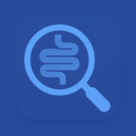

RCU Clinica
v4.5
App clinica locale · Offline · CSV · Analisi intelligenti
📚 Apri Diario
📈 Apri Dashboard
📊 Analisi
Suggerimento: installa l'app dal menu ⋮ → “Aggiungi a schermata Home”.
Release 4.5 PWA